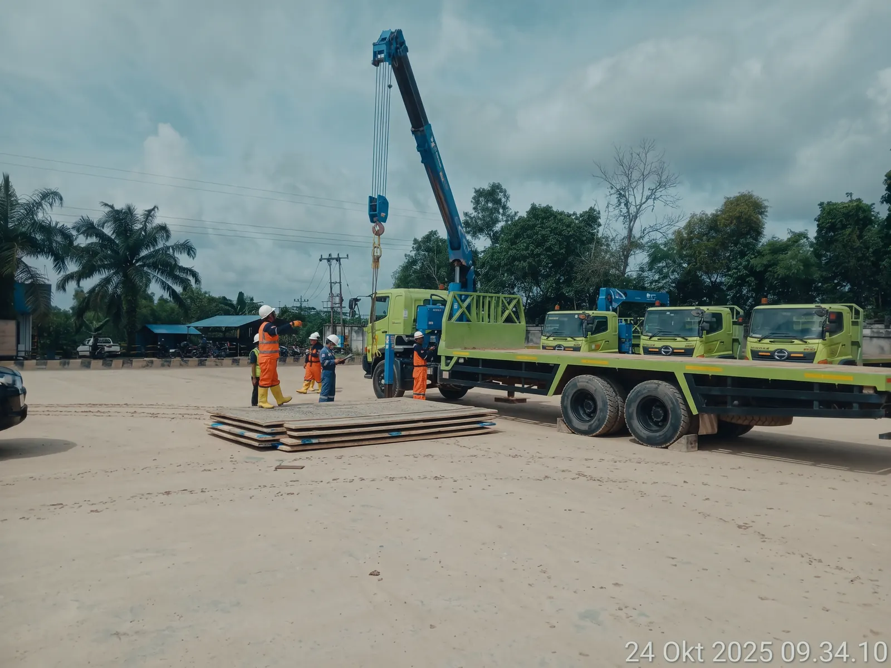
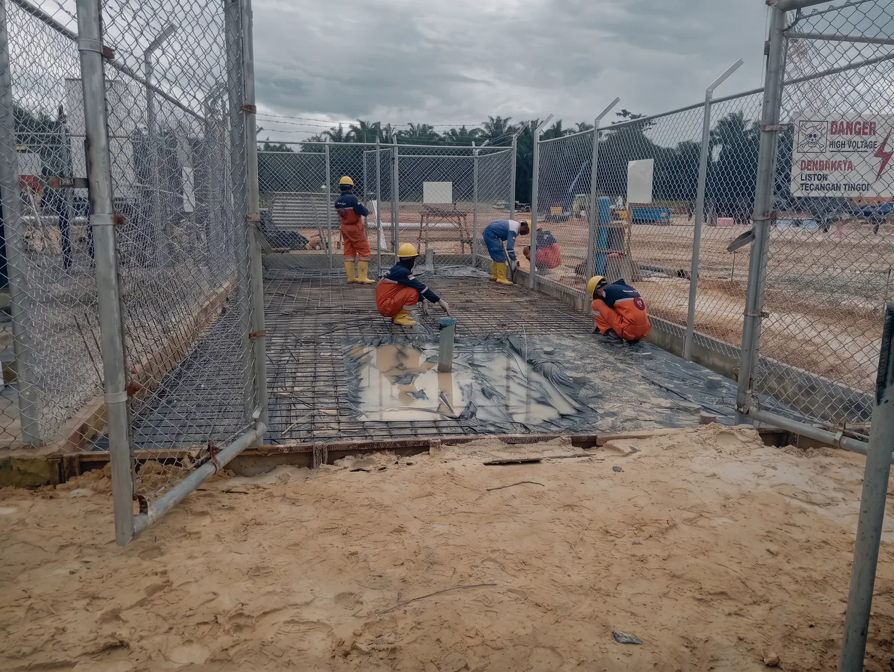
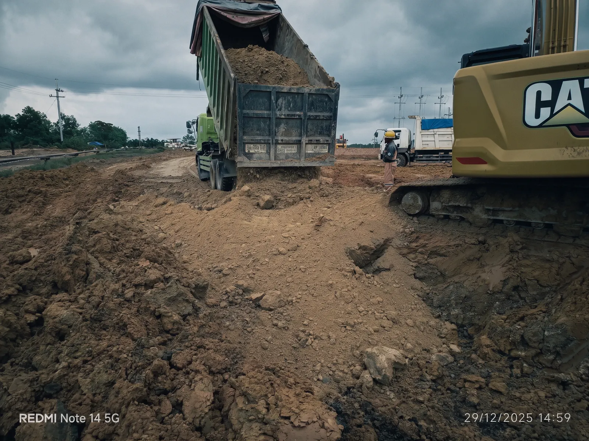
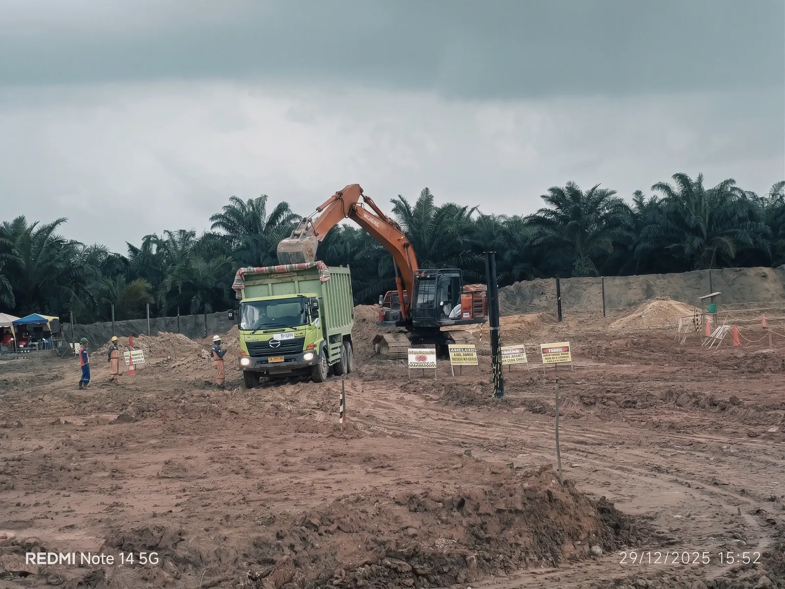
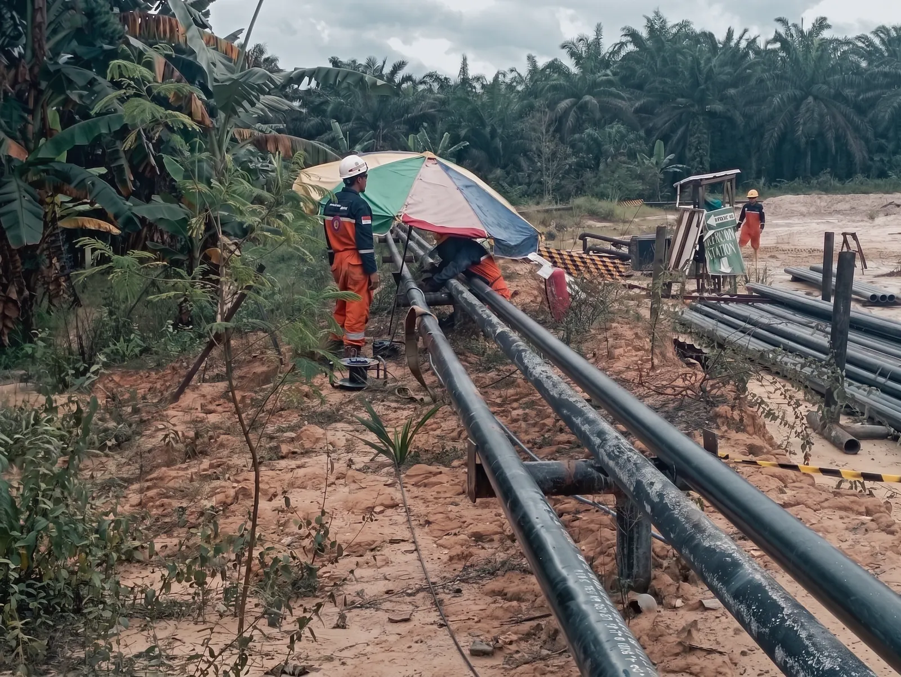
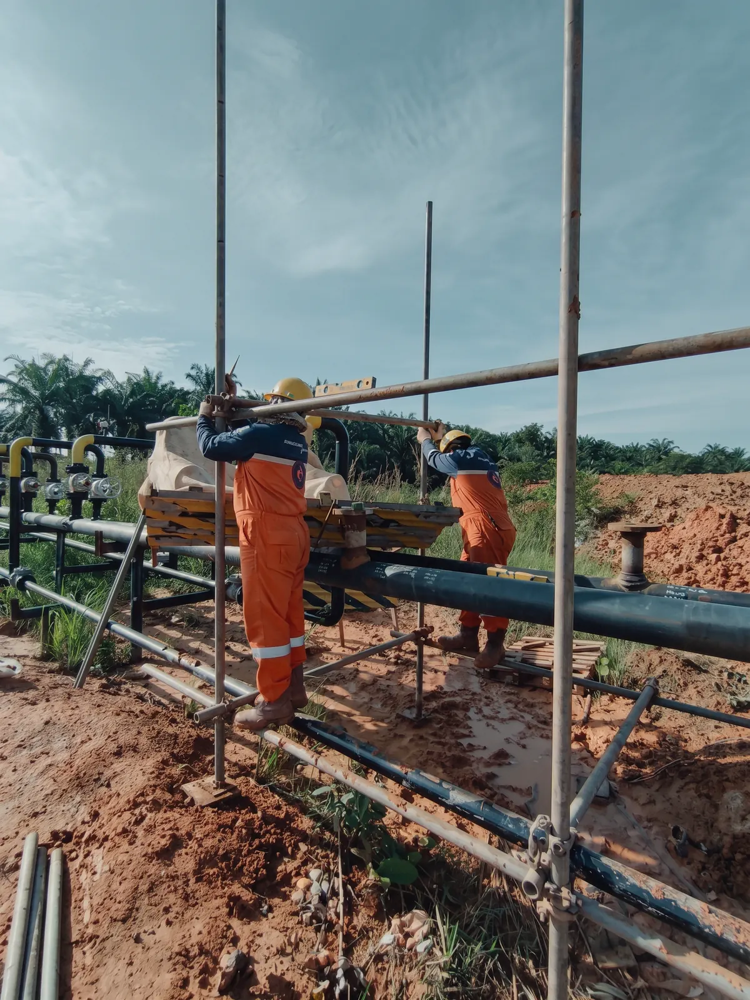
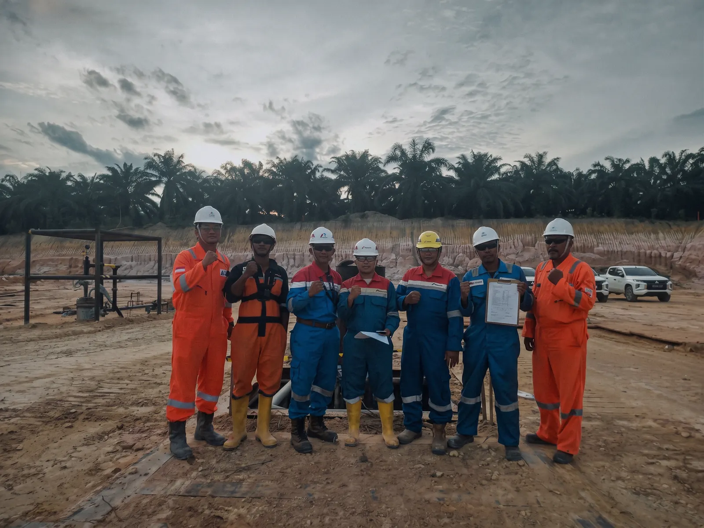
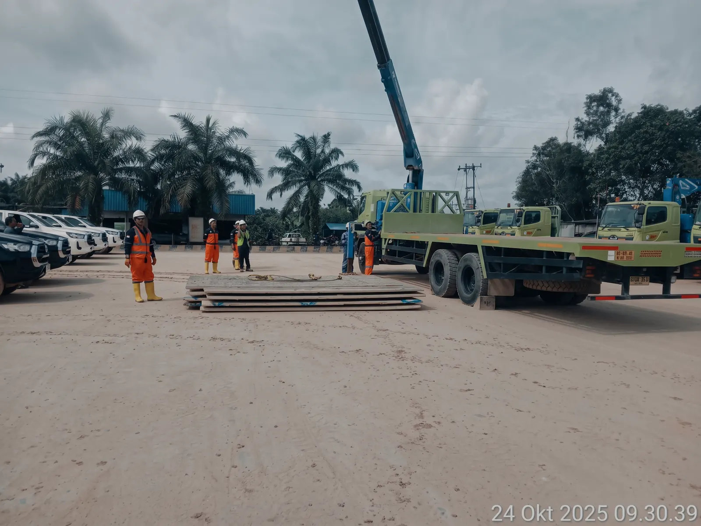
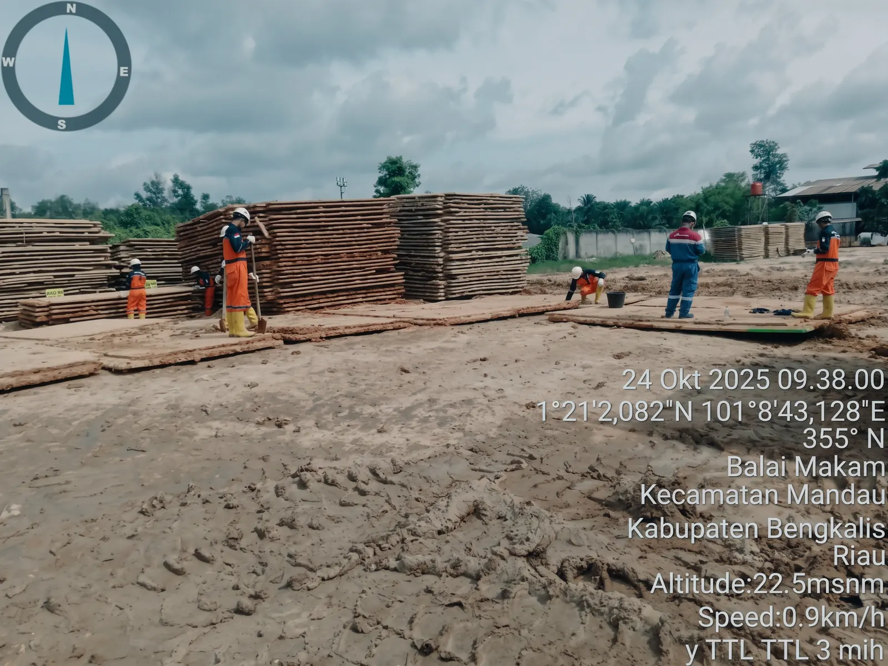

General Service Pengeboran Sumur — Area & Proyek Lumut Balai 2026–2027
- Client
- Pertamina Geothermal Energy
- Year
- 2026
- Scope
- General Services
Given the extensive technical expertise and managerial skill of our project management team, PT Maharani Prima delivers a comprehensive experience in planning and executing complex EPCC projects — from offshore to the top of the mountain, from the big city to remote areas.
Power plants — 3 coal fired · 1 gas · 2 diesel · 1 mini hydro · 2 geothermal
Metering stations & facilities — 4 gas · 3 crude oil · 1 fuel terminal
Power transmission — 410 underground MV · 40 overhead MV · 40 overhead HV · 60 HDD MV
Pipelines — 105 distribution · 15 transmission · 10 HDD
Well facilities — 220 rig substructures · 220 wellpads · 300 km wellpad road maintenance
Mining & hauling — 3,000,000 m³ fresh soil · 600,000 m³ gravel
Ten plates from site — lifting, civil works, earthworks and pipe-laying. Move through the deck with the arrows on the plate, the numbered rail, the arrow keys, or a swipe.










Scroll through our journey — from first commissions to industry recognition.
Full as-built documentation, HSE records and commissioning dossiers are maintained for every scope — available for client audit on request.
Share the scope and the constraints — we'll respond with a plan, a schedule and a number.
Get a Quote